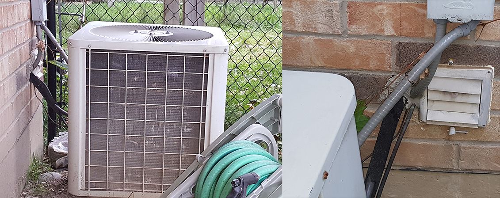
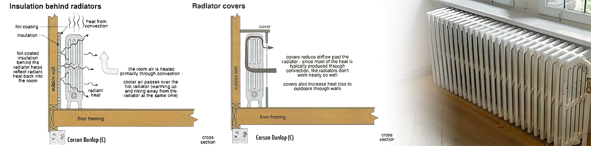
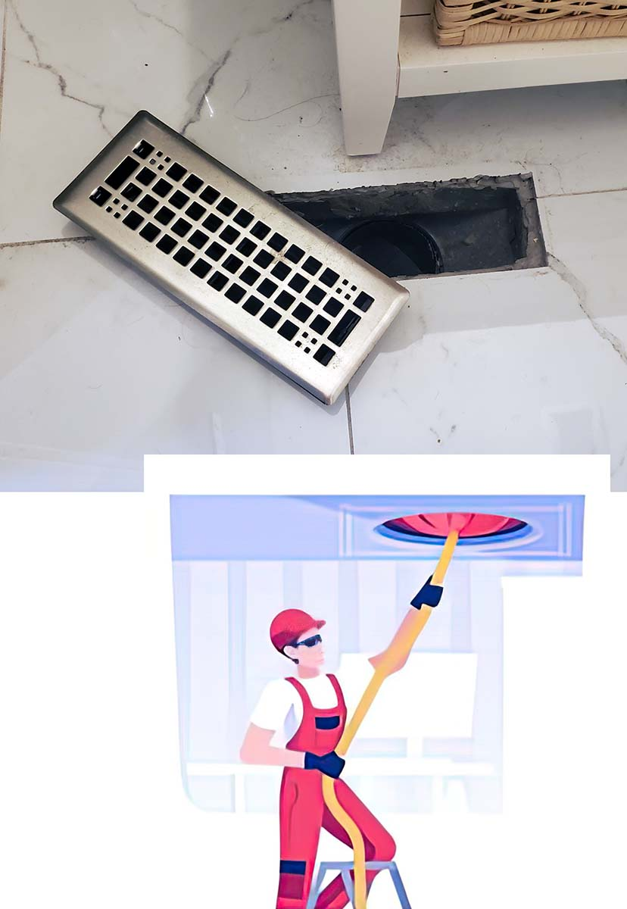
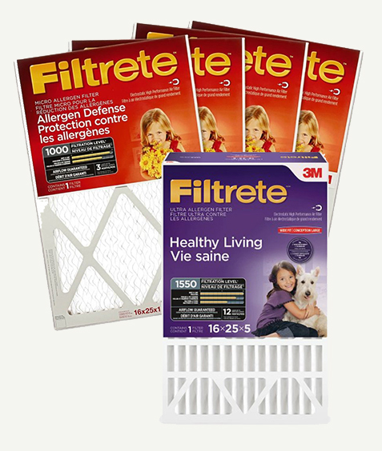
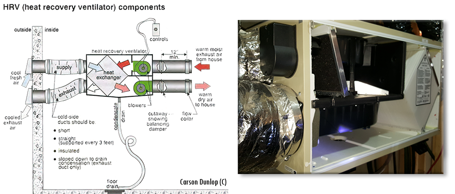

-
HVAC Maintenance Tips
These tips provide new homeowners with some general advice on their HVAC systems.
Air conditioner condenser coil: Keep it clean
Do not forget to clean the coils/fins of the outdoor condenser unit.
Why? After years of neglect, they can be matted with dirt or even lint if your clothes dryer vent (hint: they should be 6 feet (1.83 m) away) is too close to the unit. A dirty coil/fin will result in poor heat transfer, less energy efficiency, and increased costs in your A/C unit. Cleaning should be part of your regular maintenance of the condenser unit.
How? Do not power wash the unit! It may damage the fins. Do use a standard hose with some pressure. If the fins are bent, there are fin straighteners you can buy to correct them. Do you have your dryer vent right next to the condenser unit? If not cleaned, the lint will cake on the fins and efficiency will be drastically reduced.

Obstructed airflow for the air conditioner condenser unit
It is not uncommon to find a house with an A/C condenser unit covered with either bushes or structure.
Why? The outdoor condenser unit requires proper airflow through the coil/fins and out from the fan for proper heat exchange.
How? It is standard practice to have 1-3 feet around the unit and about 4-6 feet above the fan to be clear. Home inspectors will report anything that obstructs airflow, such as decks, trees, bushes, or even condenser units located in a closed area. If there are multiple condenser units, they should be at least a couple of feet apart.
-
Furnace Filters: Installed backward?
Did you know there is a correct way to insert a mechanical filter? When you buy a filter, do you just insert it into your furnace without looking at it?Why? If you do, then you may have inserted it wrong, which may lead to problems. The filter could be sucked into the blower. This can result in damaging the blower motor, or dirt on the blower, condensate coils, or heat exchanger.
How? Each filter has a small arrow on the edge of the filter, which shows you the direction in which you install the filter. Install the filter with the arrow pointing to the flow of air going into the system. You would usually see one side with a metal mesh. It is that side that should be on the blower side, which helps keep the filter in place.
-
Radiator covers
Many older homes were heated using boilers, with the distribution of hot water as the main heating source. Radiators were used in each room for heat transfer via the vehicle of radiation, but even more from the use of convection.
Why is that important? Some people don't like the look of radiators, so they tend to cover them. Radiators work best when air is free to move through the top, but if you cover the sides and top of the radiator, you limit the heat distribution to the room.If an old house has no insulation, it is good practice to install a reflective coating behind the radiator to direct heat back to the room instead of through the walls.

-
Duct Cleaning: We recommend it, but beware.
One of the 10 things we suggest you do when you move into your new house is to clean the existing duct in the house. We recommend you hire a duct cleaning service to properly clean all the ducts in the house. Duct cleaning is not something you need to do every year or even several years, but the previous owner could have had many pets or a smoker, and most likely, the ducts have not been cleaned in decades.
But also beware. The duct cleaning business has been targeted by scams. The duct cleaning scam can be in the form of cold calls, social media ads on Facebook, or even door-to-door. What is the scam? It can be in multiple forms, but they will offer duct cleaning for a cheap price and may give you links to an existing and legitimate company, saying they are from that company, and even give you its website. Most likely, they have a few local workers come to your house and “clean your ducts". The problem is they will not even have the proper duct cleaning equipment, are not licensed and only vacuum the registers. They may also “find” other issues and try to upsell you to fix them.
Never take business from text message ads or anything unsolicited. Contact the company directly from the contacts on the website. Ask friends or your new neighbours about whom they hired.
-

Duct Cleaning
-
What is the real purpose of furnace (mechanical) filters?
You are told to change your furnace filters every 3 months or so. There are claims on the package of “Healthy living” and “Allergen Defence”. Yes, it does “capture” some dust and cleans some of the air in your home, but for it to work, your blower fan must be on. How much is the blower fan on during an average day? Not enough to clean your air. The more expensive filters may clog the filter faster if you forget to change the filter often, and will restrict airflow going to the furnace. A gas furnace requires lots of air flow for proper operation. Just buy the medium-grade filter.
If you sweep your floors once a week, you may find more dust and dirt on the sweeper than in 3 months on a furnace filter. People and pets produce more dust than a filter can remove in the average house.
Despite the advertisements, the main purpose of the furnace filter is to ensure your air conditioner evaporator coil, your heat exchanger and your blower are free from dust and dirt. Dirt will reduce efficiency and may cause damage to multiple components of the furnace.
The tagline for the advertisement should be “Healthy Furnace”. -

Filter
-
What is a Heat Recovery Ventilator (HRV)?
An HRV is a heat/air exchanger that has both inlet and exhaust ports. A normal bathroom fan exhausts house air directly outside, but that is inefficient because you are removing heated air from your home. An HRV not only exhausts the air out but uses the same warm house air to heat intake air from outside. This is done in a heat exchanger called the “core”. The core is a cube that has separate paths for intake and exhaust air, with exhaust air heating the intake air indirectly.
The HRVs help creates a balanced pressure in the house (instead of negative pressure) and recovers some inefficiencies from exhausted air.
The device is usually located near the furnace and hung from the ceiling, with air filters for both intake and exhaust.
-
More HVAC Tips
-
MERV or Minimum Efficiency Reporting Value is a numbering system assigned to filters based on their ability to filter airborne particles. The higher the number, the more the filter can capture airborne particles. But does higher mean better? A higher rating will mean lower airflow going to the blower, because of the greater restriction by the filter. It will also mean you must change filters more often, which can be a problem since many do not change the filters on time. We recommend a MERV rating of about 11 as a good balance.
If you paint the interior of your house, make sure to change the filter after it is completed. Most likely, you will have the furnace on while painting, and small particles of paint will clog the filter. If you are doing a renovation or project that requires a large amount of wood cutting (installing wood flooring), replace the filter after your project is complete.
BTU is a British Thermal Unit. The amount of heat required to raise 1 pound of water 1 degree Fahrenheit. A ‘Ton’ is the amount of heat required to melt a block of ice weighing one ton or 12,000 BTUs.
What does that mean to the average homeowner? For the Southern Ontario area, on average, we are looking at about a one-ton A/C unit for about every 1,000 square feet of space in a home. For example, if you have a 2000-square-foot home, you should have an Air conditioning unit sized about 2 tons. If it is significantly higher or lower, you can have problems. Undersized? You may not be able to cool your house during the hottest days of the year. Oversized? The compressor can turn on and off more, resulting in lower life expectancy and insufficient dehumidification.
Why do you want a two-stage furnace? A single-stage furnace has a blower that runs at a single speed and a single-stage gas valve, while a two-stage furnace can also run them at lower settings. If the temperature outside is cool, running your furnace at high settings is unnecessary. By running at a lower setting, you can save energy, have longer run times to circulate/filter air, and have fewer starts/stops that can reduce wear on the system.
Commonly, people put furniture, and boxes over registers, or returns on the wall. If it is over registers, you will lose energy efficiency as you will not get the proper cooling or heating. Another problem is blocking the returns may cause your A/C unit to freeze. This will have a similar effect to a clogged filter with not enough warm air passing through the A/C coil.
If you plan on being away from your home for a couple of weeks on vacation or even one day, we recommend you shut off your main water valve. Why? It's possible that a toilet can develop a crack and leak water all over the bathroom, or a pipe can burst. This can create massive water damage to the house, costing thousands of dollars to repair.
Air conditioner units are usually measured in size by the “ton”. We already defined a “ton” in this FAQ. So, how many tons should your A/C unit be for your house?
Well, for this area of southern Ontario, the rough measure is that for every 1,000 square feet (ca. 93 m²), the a/c unit should be 1 ton. Easily, a 3,000 square foot (278.71 m²) house should have around a 3-ton A/C unit. Of course, it can be slightly higher or lower. But, it should not be too low or too high from that number. Why? See answer below.Oversized. If the unit is oversized, then the house with reach the desired temperature drop rather quickly. The less time the A/C is on, the less dehumidification there is in the house, resulting in less comfort. It will also result in the compressor turning on and off more often, potentially resulting in a short life span of the compressor.
Undersized. The problem with a much smaller A/C unit, compared to the size of the house, is that it may never reach the desired temperature on the hottest days of the year. Undersize may also result in the compressor running for an extended time, trying to reach the requested temperatures. Thus, reducing the life span of the compressor.
{kind=link}
{kind=link}